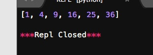

当我们在传入函数时，有些时候，不需要显式地定义函数，直接传入匿名函数更方便。
关键字lambda表示匿名函数
匿名函数有个限制，就是只能有一个表达式，不用写return，返回值就是该表达式的结果。
例如：
# -*- coding: utf-8 -*-
print map(lambda x:x*x, [1,2,3,4,5,6])

其中冒号前面的x表示函数参数。
Copyright © 2015 Powered by MWeb, Theme used GitHub CSS.